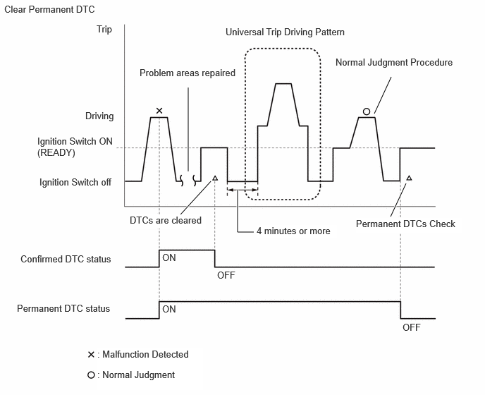
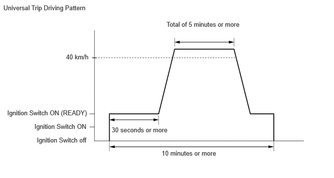

| Last Modified: 10-07-2025 | 6.11:8.1.0 | Doc ID: RM100000002K51G |
| Model Year Start: 2024 | Model: Tacoma HV | Prod Date Range: [03/2024 - ] |
| Title: BRAKE CONTROL / DYNAMIC CONTROL SYSTEMS: ELECTRONICALLY CONTROLLED BRAKE SYSTEM (except Gasoline Model): DTC CHECK / CLEAR; 2024 - 2026 MY Tacoma HV [03/2024 - ] | ||
DTC CHECK / CLEAR
HINT:
- DTCs which are stored in the skid control ECU can be displayed on the GTS. The GTS can display the confirmed and permanent DTCs.
- If a malfunction is detected during the current driving cycle, confirmed and permanent DTCs are stored.
- Confirmed DTCs can be cleared by using the GTS. However, permanent DTCs cannot be cleared using the GTS.
- After clearing confirmed DTCs using the GTS,
permanent DTCs can be cleared when the system is
determined to be normal for the relevant DTCs and
then the universal trip is performed. The driving
pattern to obtain a normal judgment is described
under the "Confirmation Driving Pattern" for the
respective DTC.
To clear permanent DTCs, all of the following conditions must be are met:
- There is a history that universal trip driving was performed.
- The vehicle has been judged as normal for 1 trip.
- No malfunctions are detected.
Detection Logic Examples
| *: Including 2 trip detection | ||
|
Confirmed DTC* |
Store condition |
Malfunction detected |
|
Clear condition |
No malfunctions in 40 driving cycles or DTCs cleared using GTS |
|
|
Permanent DTC* |
Store condition |
Malfunction detected |
|
Clear condition |
Ignition switch is turned to ON (READY) after normal judgment obtained in 3 consecutive driving cycles or After DTCs cleared using GTS, universal trip performed and normal judgment obtained for 1 trip |
|
|
MIL |
ON |
Malfunction detected |
|
OFF |
Ignition switch is turned to ON (READY) after normal judgment obtained in 3 consecutive driving cycles or DTCs cleared using GTS |
|
HINT:
- Obtaining a normal judgment and performing a universal trip driving pattern can be done in the same driving cycle or in different driving cycles.
- Ensure to wait at least 4 minutes between each trip.
CHECK DTC
(a) Turn the ignition switch off.
(b) Connect the GTS to the DLC3.
(c) Turn the ignition switch to ON.
(d) Turn the GTS on.
(e) Enter the following menus: Chassis / Brake Booster / Trouble Codes.
Chassis > Brake Booster > Trouble Codes
(f) Enter the following menus: Chassis / Brake/EPB* / Trouble Codes.
*: Electric Parking Brake System
Chassis > Brake/EPB > Trouble Codes
(g) Check the DTC(s) and Freeze Frame Data, and then write them down.
NOTICE:
The electronically controlled brake system outputs DTCs for the following system. When DTCs other than those in Diagnostic Trouble Code Chart for the electronically controlled brake system are output, refer to Diagnostic Trouble Code Chart for the relevant system.
|
System |
Proceed to |
|---|---|
|
Electric Parking Brake System |
|
![2024 - 2026 MY Tacoma HV [03/2024 - ]; PARKING BRAKE: ELECTRIC PARKING BRAKE SYSTEM (except Gasoline Model): DIAGNOSTIC TROUBLE CODE CHART](../../../../stylegraphics/info.gif)
|
GTS Display |
Description |
|---|---|
| *: Including 2 trip detection | |
|
Test Failed |
Shows the malfunction judgment results during the current trip. |
|
Confirmed* |
Shows the DTCs confirmed up to now. (The number of current trips differs for each DTC.) |
(h) Check the details of the DTC(s).
CLEAR DTC (CONFIRMED DTC)
(a) Turn the ignition switch off.
(b) Connect the GTS to the DLC3.
(c) Turn the ignition switch to ON.
(d) Turn the GTS on.
(e) Enter the following menus: Chassis / Brake Booster / Trouble Codes.
Chassis > Brake Booster > Clear DTCs
(f) Enter the following menus: Chassis / Brake/EPB* / Trouble Codes.
*: Electric Parking Brake System
Chassis > Brake/EPB > Clear DTCs
(g) Press the clear button.
OUTLINE
- After clearing confirmed DTCs using the GTS, permanent DTCs can be cleared when the universal trip is performed and then the system is determined to be normal for the relevant DTCs. The driving pattern to obtain a normal judgment is described under the "Confirmation Driving Pattern" for the respective DTC.
- To clear permanent DTCs, all of the following
conditions must be are met:
- There is a history that universal trip driving was performed.
- The vehicle has been judged as normal for 1trip.
- No malfunctions are detected.
CLEAR PERMANENT DTC
NOTICE:
When performing the following procedure, make sure that the driver door is closed and is not opened at any time during the procedure.
(a) Turn the ignition switch off.
(b) Connect the GTS to the DLC3.
(c) Turn the ignition switch to ON.
(d) Turn the GTS on.
(e) Enter the following menus: Chassis / Brake Booster / Trouble Codes.
Chassis > Brake Booster > Trouble Codes
HINT:
If "PERMANENT" in the top right of the screen displays "YES", permanent DTCs are stored.
(f) Enter the following menus: Chassis / Brake/EPB* / Trouble Codes.
*: Electric Parking Brake System
Chassis > Brake/EPB > Trouble Codes
HINT:
If "PERMANENT" in the top right of the screen displays "YES", permanent DTCs are stored.
(g) Select the "Generic" tab.
(h) Check if permanent DTCs are stored.
HINT:
If permanent DTCs are not output, it is not necessary to continue this procedure.
(i) Clear the DTCs (even if no DTCs are stored, perform the clear DTC procedure).
Chassis > Brake Booster > Clear DTCs
Chassis > Brake/EPB > Clear DTCs
NOTICE:
Do not clear the DTCs or disconnect the cable from the auxiliary battery terminal after performing this step.
(j) Turn the ignition switch off and wait for 4 minutes or more.
(k) Perform the universal trip.
HINT:
The driving pattern to obtain a normal judgment and the universal trip driving can be performed consecutively in the same driving cycle.
 - Turn the ignition switch to ON (READY) and wait for 30 seconds or more.
- With the engine running, drive the vehicle at 40
km/h (25 mph) or more for a total of 5 minutes or
more.
CAUTION:
When performing a driving pattern, obey all speed limits and traffic laws.
HINT:
It is possible to complete the drive pattern even if the vehicle decelerates to less than 40 km/h (25 mph) during the driving cycle provided that the vehicle is driven at 40 km/h (25 mph) or more for a total of 5 minutes.
- Allow 10 minutes or more to elapse from the time the ignition switch turned to ON (READY).
(l) Turn the ignition switch off and wait for 4 minutes or more.
(m) Turn the ignition switch to ON (READY).
(n) Perform the normal judgment procedure in the respective confirmation driving pattern of each output DTC.
HINT:
Do not turn the ignition switch off by mistake during this step.
(o) With the ignition switch ON (READY) wait for 5 seconds or more. (Except when the ignition switch is already turned to ON (READY) or the engine is running)
(p) Turn the ignition switch off and wait for 4 minutes or more.
(q) Turn the ignition switch to ON (READY).
(r) Enter the following menus: Chassis / Brake Booster / Trouble Codes.
Chassis > Brake Booster > Trouble Codes
(s) Enter the following menus: Chassis / Brake/EPB* / Trouble Codes.
*: Electric Parking Brake System
Chassis > Brake/EPB > Trouble Codes
(t) Check that the permanent DTCs have been cleared.